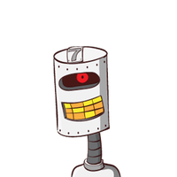
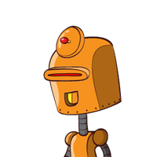
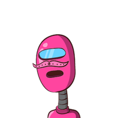
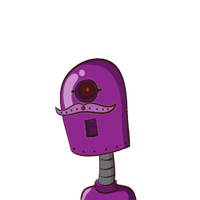

DISPONIBLE

R-01
RUEDAS · 20 kg
01 CENTRAL DE DESPACHO · CAMPUS UdeM
flota de reparto
Un centro de control para robots de ruedas, orugas y drones que reparten dentro del campus de la Universidad de Medellín. Asigna cada llamada al robot compatible más barato, recorre los senderos reales y no deja volar un dron sin consultar el clima.
DISPONIBLE

RUEDAS · 20 kg
EN RUTA

RUEDAS · FRÍO
EN RUTA

ORUGAS · 40 kg
MANTENIM.

DRON · AZOTEAS
02 así funciona
No es un video. Es una simulación real del programa, grabada desde
CentroControl y dibujada con los mismos mapas de la aplicación. Toca un paso para saltar a él.
RADIO
Un documento de la Biblioteca a Derecho. AUTO compara costos y elige R-01, el más barato.
Sale de la cafetería. Solo R-02 tiene control de temperatura: la carga elige por capacidades, no por clase.
Un acta a la Azotea B11 solo la lleva el dron. Open-Meteo dice tormenta: drones en tierra y la llamada espera.
El reintento automático la asigna a D-01, que despega, vuela recto y aterriza en la azotea.
Material peligroso a una azotea: ningún robot podrá llevarla nunca. Falla y queda en la bitácora.
El operador manda a O-01 a mantenimiento. El asignador lo cronometra y vuelve solo a los 30 s.
El operador intenta un frágil con O-01: rechazado, está recargando. Pulsa AUTO y lo toma R-02.
03 el expediente
A-01
La geometría del campus sale de OpenStreetMap. Los robots terrestres siguen el camino más corto por los senderos (Dijkstra); el dron vuela en línea recta.
RedSenderos · Ruta · trazar_ruta()
A-02
Antes de cada vuelo consulta Open-Meteo: viento, ráfagas, lluvia, visibilidad y tormentas. Si la API no responde, el dron no despega.
ProveedorClima · ReporteClima.es_favorable()
A-03
Nager.Date avisa si hoy es festivo. La cafetería cierra y sus pedidos esperan, sin tocar el asignador.
ProveedorCalendario · CalendarioNagerDate
A-04
AUTO elige el robot compatible más barato y, a igual costo, el más cercano. A mano, cada rechazo dice la regla: sobrepeso, zona, batería, clima.
AsignadorEntregas · motivo_rechazo()
A-05
Con 25 % de batería o menos el robot va a recargar; el operador también puede mandarlo. Vuelve al 100 % a los 30 s.
enviar_a_mantenimiento() · liberar_mantenimientos()
A-06
Entregas exitosas y fallidas, rechazos por clima, despachos rechazados y mantenimientos. Se exporta como reporte de texto.
Bitacora · TipoEvento
A-07
three.js con edificios extruidos, luces de noche, nubes, lluvia y niebla según el clima. Tres vistas: DESPACHO, CALLES y SATÉLITE. Sin WebGL, un mapa 2D en canvas hace lo mismo.


04 por dentro
El dominio no sabe que existe una página web, y el asignador no sabe qué API de clima usa.
CentroControl · PuenteWeb · página web
AsignadorEntregas
Robot · Carga · Batería · Flota · Solicitud · Bitácora
ProveedorClima · ProveedorCalendario
LA PRUEBA DEL PRD · SUSTITUIR EL CLIMA EN VIVO
_intentar() · despachar()
SIN CAMBIOS
HTTP · timeout 5 s · caché 5 min
asignador.cambiar_proveedor_clima(ServicioClimaSimulado(viento_kmh=45))HERENCIA
Un dron es un robot: redefine zonas, costo, ruta y requiere_clima(). El asignador no pregunta el tipo.
COMPOSICIÓN
La batería nace y muere con su robot, y solo cambia con consumir() y recargar().
AGREGACIÓN
Los robots existen por sí mismos: se cargan de campus.json y se quitan sin destruirlos.
05 manos a la obra
Python 3.10 o superior y Windows 10/11 con WebView2 (viene instalado en Windows 11). Git es opcional.
¿No sabes tu versión? Escribe python --version en una terminal.
git clone https://github.com/gtorresc/udem-despacho.gitSin Git: descarga el ZIP y descomprímelo.
cd udem-despachopython -m venv .venv.venv\Scripts\activateAsí las dependencias no se mezclan con las de otros proyectos.
pip install -r requirements.txtrequests, pillow, pywebview y pytest.
python main.pypython main.py --real | clima de Open-Meteo y festivos de Nager.Date (necesita internet) |
python main.py --consola | la demo por texto, sin ventana |
python main.py --depurar | abre las herramientas del navegador |
python -m pytestDeberías ver 269 passed.
Falta WebView2. Instálalo desde la página de Microsoft («Evergreen Runtime») y vuelve a abrir. Mientras tanto, python main.py --consola funciona sin ventana.
Las vistas CALLES y SATÉLITE descargan imágenes la primera vez. Sin internet el mapa se queda en DESPACHO, que funciona offline.
--real los drones nunca vuelanEs el fallo seguro: si Open-Meteo no responde, el clima queda «no disponible» y ningún dron despega. Revisa tu conexión o usa el clima simulado del panel.
pip no se reconoce como comandoUsa python -m pip install -r requirements.txt. Si tampoco funciona, reinstala Python marcando «Add Python to PATH».
06 guía rápida
07 episodios
El proyecto se construyó por fases, como pide el curso. Cada fila se abre.
udem-despacho.docs/fase6-reflexion.--real, memoria de la GPU, tecla M.isinstance (D4) y jerarquía de cargas (D3).08 hablemos
CARNÉ DE OPERADOR · UdeM

Programación Orientada a Objetos · Universidad de Medellín